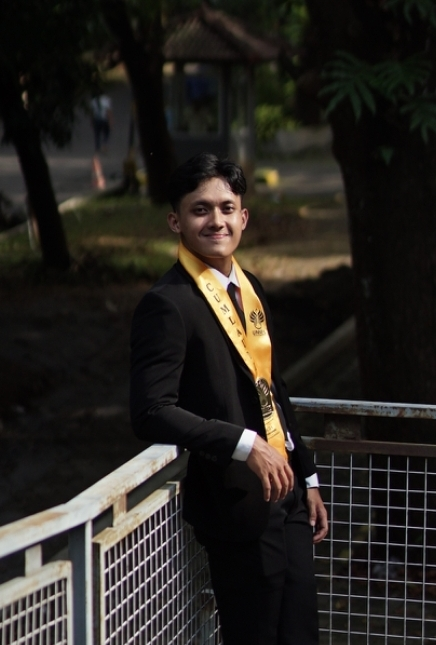
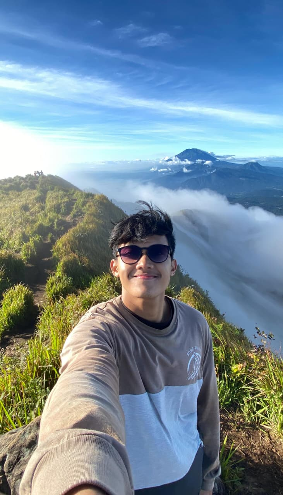
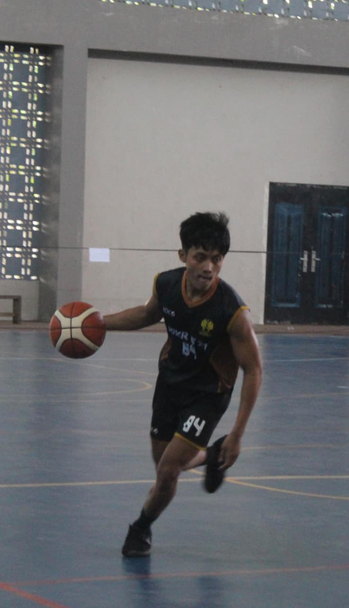
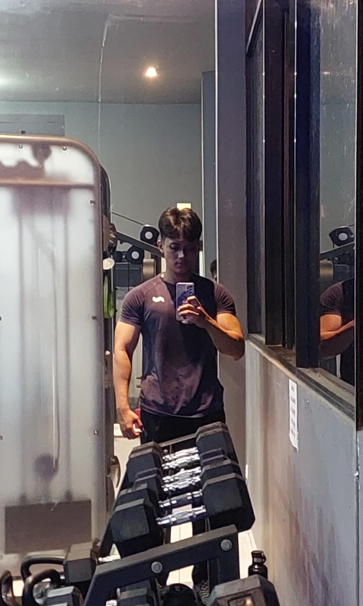
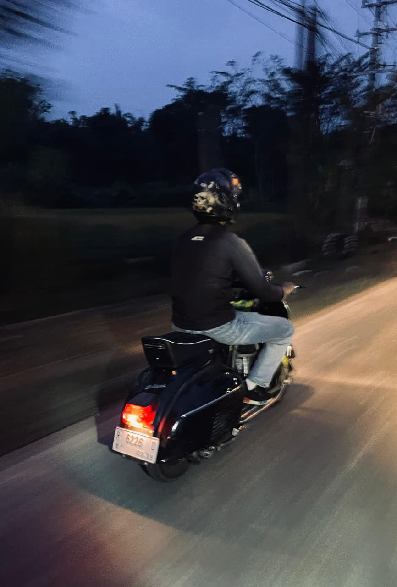

Rafli Daffa Al Fatih
PPG Prajabatan 2026
Memuat Portofolio...
PJOK
Memuat Portofolio...
E Portofolio PPG Prajabatan 2026
NIM: A981260074
Pendidikan Jasmani, Olahraga, dan Kesehatan
Dari Pembelajaran Menjadi Pendidik: Perjalanan
Menuju Guru Profesional

Letakkan foto kamufoto-profil-outdoor.jpg
Perkenalkan, nama saya Rafli Daffa Al Fatih. Saya berasal dari Banjarnegara, sebuah daerah di Jawa Tengah yang terkenal dengan suasana pegunungan yang sejuk, budaya yang masih kental, serta masyarakatnya yang ramah dan menjunjung tinggi nilai kebersamaan. Berasal dari Banjarnegara membuat saya tumbuh dengan semangat sederhana, pekerja keras, dan menghargai tradisi lokal.
Perjalanan hidup saya menjadi seorang pendidik berawal dari Kota Semarang (Universitas Negeri Semarang) hingga saat ini melanjutkan Pendidikan Profesi Guru di Universitas Muhammadiyah Surakarta semakin memperkaya pengalaman saya dalam memahami keberagaman karakter dan latar belakang individu. Dari pengalaman tersebut, saya menyadari bahwa setiap orang memiliki potensi yang berbeda dan membutuhkan pendekatan yang berbeda pula dalam proses pembelajaran.
Inspirasi saya untuk menjadi seorang guru tidak terlepas dari pengalaman belajar serta peran guru-guru yang saya temui sepanjang perjalanan pendidikan. Selain itu, pengalaman saya kuliah dan mengajar semakin menumbuhkan ketertarikan saya pada dunia pendidikan. Pengalaman tersebut diperkuat ketika saya terjun langsung menjadi guru PPL di Semarang, yang memberikan pemahaman nyata bahwa menjadi pendidik bukan sekadar menyampaikan materi, melainkan membimbing, mengarahkan, dan menginspirasi peserta didik.
Melalui Program Pendidikan Profesi Guru (PPG), saya memiliki tujuan untuk menjadi guru profesional yang tidak hanya kompeten dalam bidang keahlian, tetapi juga mampu menciptakan pembelajaran yang bermakna, berpusat pada peserta didik, serta adaptif terhadap perkembangan zaman. Saya ingin menjadi pendidik yang mampu menuntun peserta didik agar berkembang sesuai dengan potensi dan karakter yang dimiliki, sekaligus membentuk generasi yang tidak hanya cerdas secara akademik, tetapi juga berkarakter kuat.
“Seorang guru bukan hanya pengajar, tetapi penuntun yang membantu setiap langkah kecil menuju masa depan yang besar.”
Dikenal dengan julukan "Gilar-Gilar", Banjarnegara adalah tanah kelahiran saya yang asri, berhawa sejuk, kaya akan sejarah budaya Dieng, dan terkenal dengan kuliner Dawet Ayu.

Hiking mengajarkan saya arti kesabaran dan ketekunan di setiap langkah. Menikmati perjalanan di tengah ketenangan alam membantu saya untuk lebih bersyukur, menghargai proses, dan menemukan keseimbangan diri di luar hiruk-pikuk rutinitas.

Bermain basket bukan sekadar olahraga bagi saya, melainkan cara untuk melatih kerja sama tim, disiplin, dan ketangkasan. Setiap pertandingan mengajarkan pentingnya sportivitas dan semangat pantang menyerah.

Menjaga kebugaran melalui gym dan fitness membantu saya tetap bugar dan berenergi untuk menjalani rutinitas sebagai pendidik. Disiplin dalam berlatih membentuk mental yang kuat dan fokus yang lebih baik.

Ketertarikan saya pada dunia otomotif mencakup apresiasi terhadap desain, mesin, dan inovasi teknologi kendaraan. Bagi saya, otomotif adalah perpaduan antara seni teknik dan kebebasan dalam bereksplorasi.
Saya memilih menjadi guru karena menyadari bahwa pendidikan memiliki peran besar dalam membentuk masa depan seseorang. Keinginan ini tumbuh dari pengalaman belajar yang saya jalani serta semakin kuat saat menempuh pendidikan di Universitas Negeri Semarang dan berlanjut ke Universitas Muhammadiyah Surakarta.
Pengalaman terjun langsung menjadi guru PPL di Semarang semakin mempertegas pilihan saya untuk menjadi pendidik. Saya memahami bahwa setiap peserta didik memiliki potensi yang berbeda dan membutuhkan bimbingan yang tepat. Oleh karena itu, saya ingin menjadi guru profesional yang tidak hanya mengajar, tetapi juga membimbing dan menginspirasi, serta menciptakan pembelajaran yang bermakna bagi peserta didik.
Saya menempuh Program Pendidikan Profesi Guru (PPG) di Universitas Muhammadiyah Surakarta (UMS), salah satu perguruan tinggi swasta terbaik di Indonesia yang terakreditasi Unggul. Di kampus ini, saya dibimbing oleh dosen-dosen berpengalaman untuk menjadi pendidik profesional yang berkarakter, inovatif, dan adaptif terhadap perkembangan dunia pendidikan modern.
Sebagai bagian dari pemenuhan mata kuliah Praktik Pengalaman Lapangan (PPL), saya melaksanakan praktik mengajar terbimbing di SMP Muhammadiyah 7 Surakarta. Selama program PPL ini, saya aktif merancang perangkat ajar, melaksanakan modul ajar PJOK, mengelola kelas, serta berkolaborasi dengan guru pamong dan praktisi pendidikan di sekolah mitra demi menciptakan suasana belajar yang aktif dan menyenangkan bagi siswa.
Saya meyakini bahwa mengajar bukan hanya menyampaikan materi, tetapi juga membimbing peserta didik untuk mengembangkan potensi, karakter, dan keterampilan yang mereka miliki. Setiap peserta didik memiliki kemampuan dan cara belajar yang berbeda, sehingga guru perlu menciptakan lingkungan belajar yang nyaman, inklusif, dan memberikan kesempatan kepada semua peserta didik untuk berkembang.
Filosofi ini sejalan dengan pemikiran Ki Hajar Dewantara bahwa guru berperan sebagai penuntun dalam proses belajar peserta didik. Guru tidak hanya menjadi sumber informasi, tetapi juga fasilitator yang membantu peserta didik membangun pengetahuan melalui pengalaman, diskusi, dan refleksi. Oleh karena itu, saya berusaha menghadirkan pembelajaran yang aktif, bermakna, dan dekat dengan kehidupan sehari-hari.
Sebagai calon guru profesional, saya berkomitmen untuk terus belajar dan memperbaiki kualitas pembelajaran. Saya percaya bahwa guru yang baik adalah guru yang mampu menginspirasi, memberikan teladan, serta membantu peserta didik menjadi pribadi yang berkarakter, mandiri, dan siap menghadapi tantangan di masa depan.
Bagi saya, proses belajar mengajar adalah sebuah siklus reflektif yang tidak pernah berhenti. Setiap kali menyelesaikan sesi pembelajaran, saya selalu mengevaluasi efektivitas metode yang digunakan, respon emosional dan motorik peserta didik, serta kendala teknis yang dihadapi di lapangan.
Program Pendidikan Profesi Guru (PPG) ini menjadi ruang refleksi yang sangat berharga bagi saya untuk menyelaraskan pemahaman teoritis dengan praktik nyata di sekolah mitra. Kritik konstruktif, masukan dari dosen pembimbing, instruktur, guru pamong, serta rekan sejawat memacu saya untuk terus belajar dan berinnovasi demi meningkatkan pelayanan pendidikan yang berpusat pada peserta didik.
Kumpulan karya dan produk pembelajaran yang dikembangkan selama PPG
Saya terbuka untuk kolaborasi dan diskusi seputar pendidikan!